今天尝试了一下在MacOS上安装OpenClaw，原以为很简单，但其实这也踩了不少坑。最终看下来，还是网络的问题。
如果深入分析OpenClaw机制，其实完全可以娓娓道来，但如果从解决问题出发的话，只要把网络问题解决，在国内使用OpenClaw几乎没有难度。
直接访问官网：https://openclaw.ai/
然后对于MacOS用户，其实完全可以打开Terminal一键复制命令安装
（这一步会持续较长时间，其中的交互都选择Yes。完成之后输入openclaw onboard可以直接跳到惊心动魄的图文引导环节）：
curl -fsSL https://openclaw.ai/install.sh | bash
我没有选择一键命令的方式。
我是因为本身机器有Node.js环境，所以就使用了npm安装。
之前在Windows上折腾那么久，其实很大程度是因为第一步的Node.js就卡住了，而MacOS的生态好一些，因此可以通过下面的方式，从安装Node.js到安装OpenClaw一气呵成。
如果采用手动安装的方式，则需要先安装Node.js然后再安装OpenClaw。
先安装Node.js:
# Download and install nvm:
curl -o- https://raw.githubusercontent.com/nvm-sh/nvm/v0.40.4/install.sh | bash
# in lieu of restarting the shell
\. "$HOME/.nvm/nvm.sh"
# Download and install Node.js:
nvm install 25
# Verify the Node.js version:
node -v # Should print "v25.8.2".
# Verify npm version:
npm -v # Should print "11.11.1".
然后安装OpenClaw：
# Install OpenClaw
npm i -g openclaw
# Meet your lobster
openclaw onboard
正常来说，npm i -g openclaw 需要等待一段时间，然后可以重新打开一个Terminal，然后输入openclaw onboard。
之后就是惊心动魄的图文引导环节了！(以下的交互使用方向键选择，空格键选中，回车键确认)
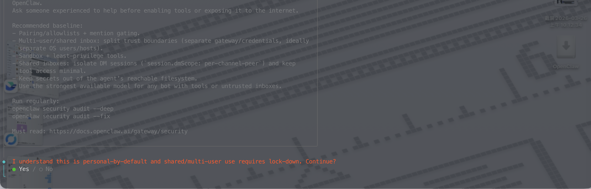
如果来到了这一步，说明OpenClaw安装成功，这里是一些免责说明，切成Yes继续。
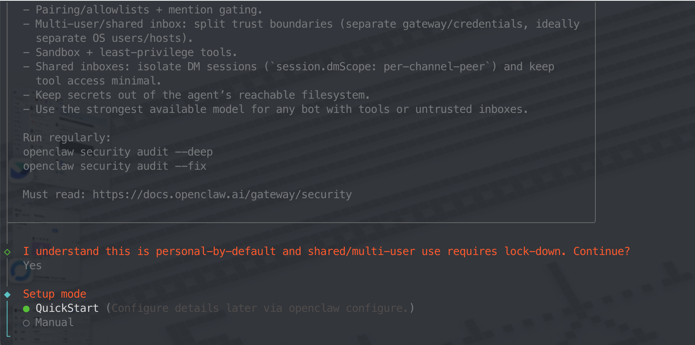
第二步这里建议直接QuickStart，会有一步一步的引导。
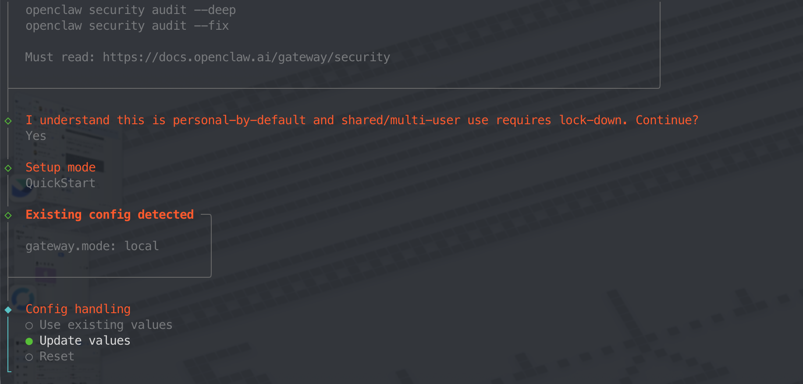
这里因为是第一次使用，选择Reset或者Update都可以。
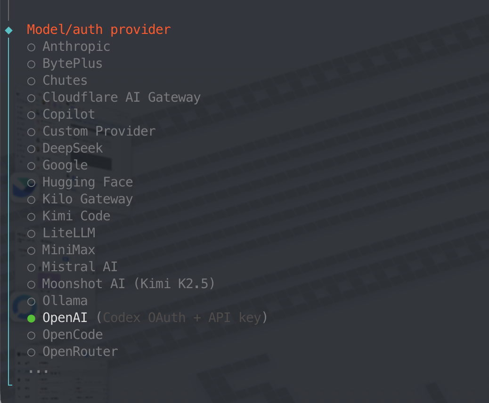
这里就是为OpenClaw选择大模型的能力，列表里是按照字母顺序排列的，这里看情况选择，都有对应的引导。
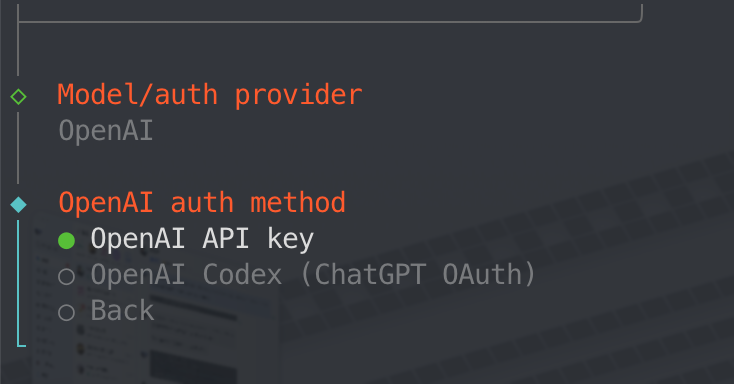
我是习惯使用ChatGPT，所以以此为例，这里选择第二个OpenAI Codex。
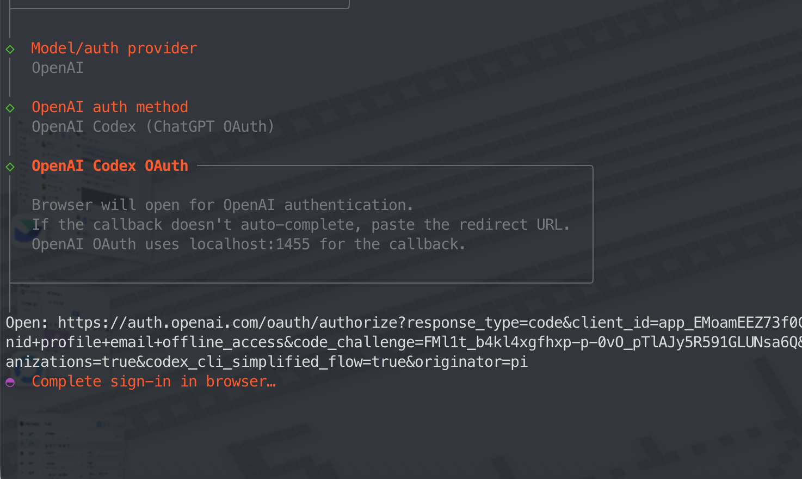
这里正常情况下会自动跳转浏览器，然后你登录自己的账号，登录之后，因为是在本地部署的，会有下面的图示：
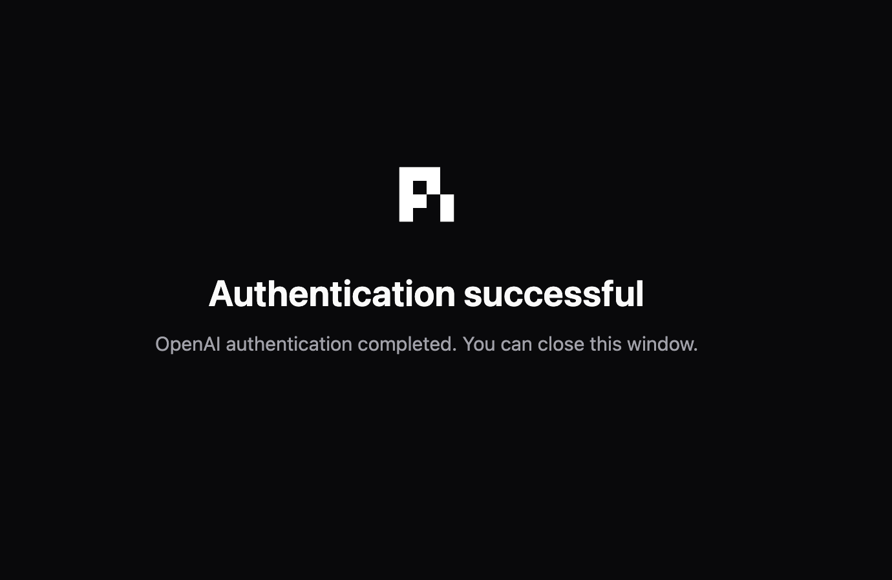
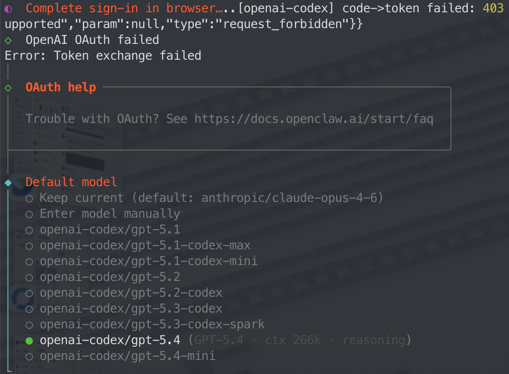
这里可以直接选择效果最好的5.4模型。
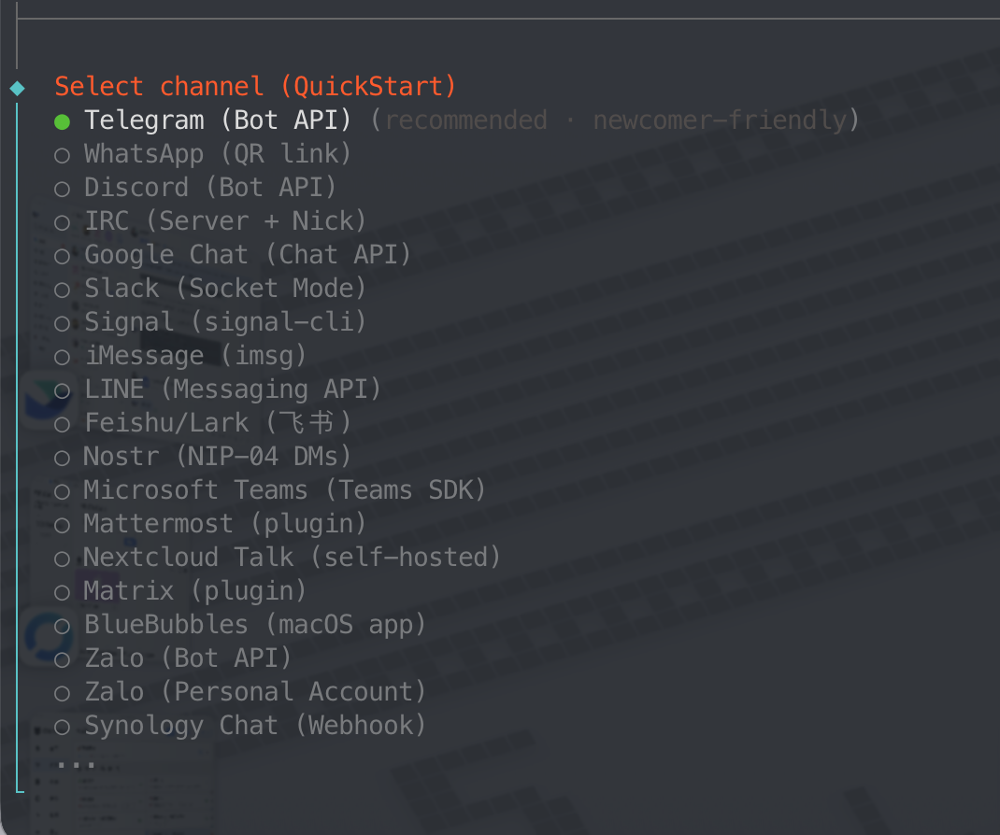
这里就是接一个类似“遥控器”的东西，比如外接一个App，通过这个App就可以直接跟你电脑上的OpenClaw沟通。
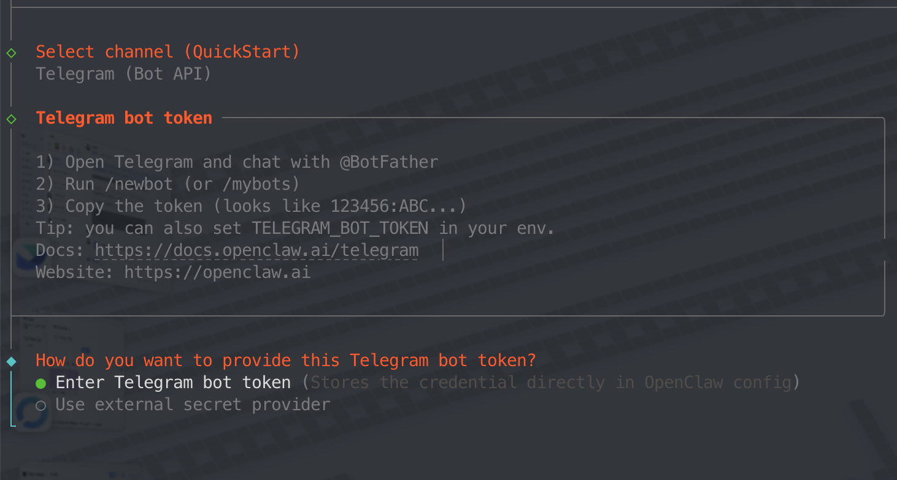
举例，如果选了第一个，那么它会相应提示你做什么，复制粘贴什么来完成设置。
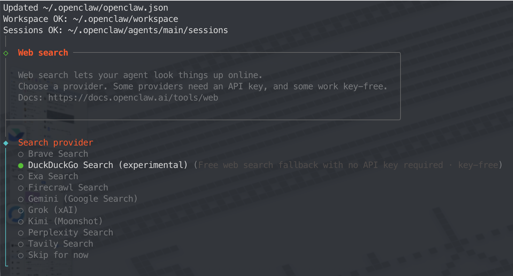
这里是OpenClaw上网搜索使用的浏览器能力，可以选择免费的，可以选择需要填写API的。
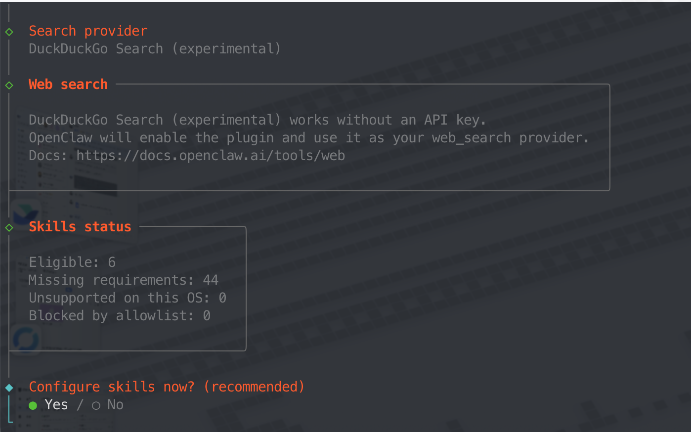
这里是选择安装一些比较成熟的技能Skill，比如我看着技能的说明选了下面的这些：
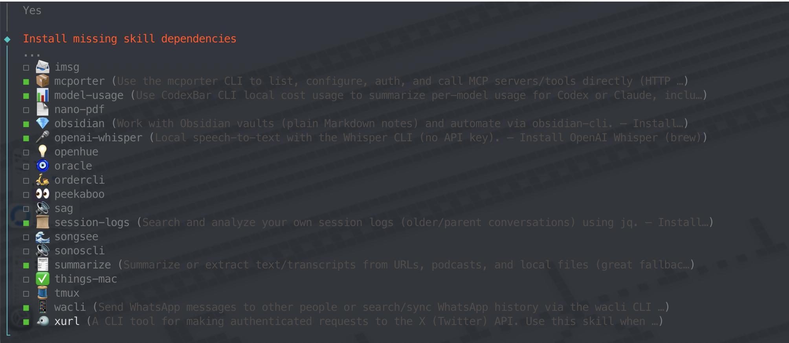
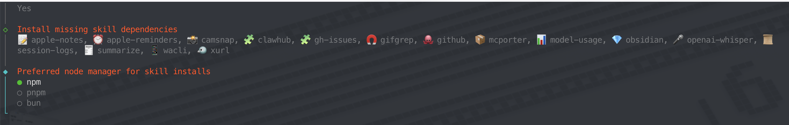
下一步就是选择使用什么工具来安装，这里默认的就好。
然后这里的Skills的安装可能会需要一段时间，这里如果网络环境不好的话，大概率会下载超时、安装失败，比如下面这样：
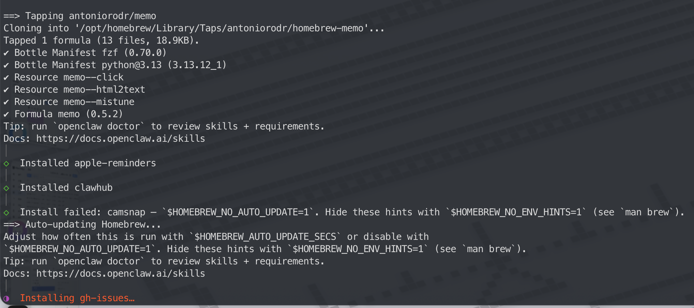
但不影响后续的使用，等它继续完成直接出现下面的设置，这里都是填写相应Skill能力的API，如果没有就跳过，也不影响OpenClaw的主体能力：
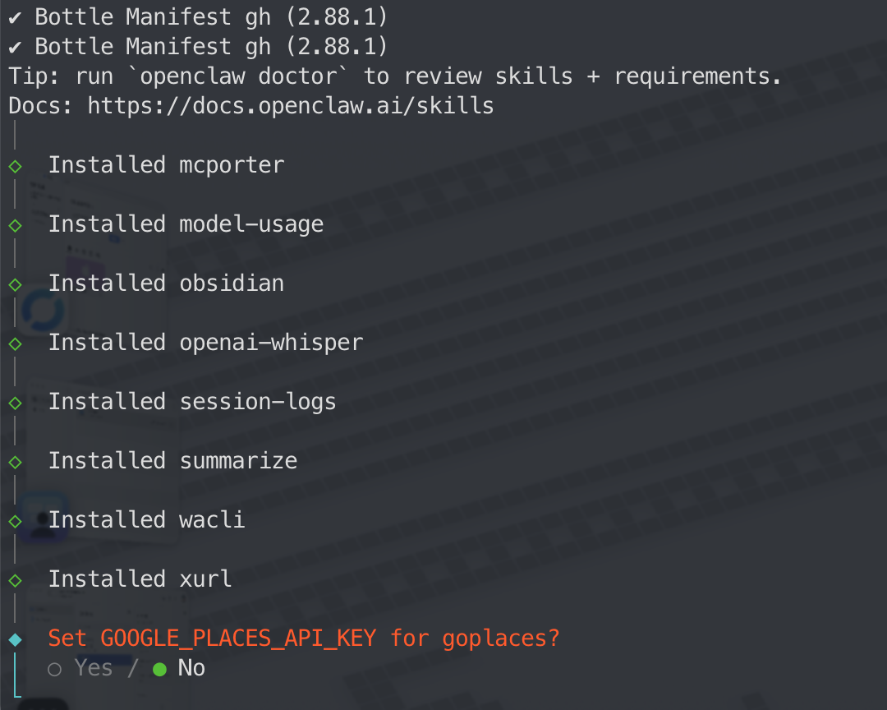
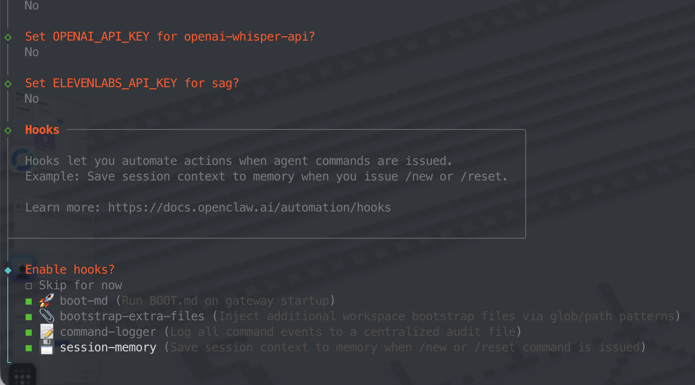
最后来到几个系统功能的选择，我觉得都可以开启（对于具体怎么用，后面可以慢慢研究）。
然后等一段时间，会继续安装gateway，按理说，MacOS上这一步是不会出错的，会直接成功，然后直到出现……
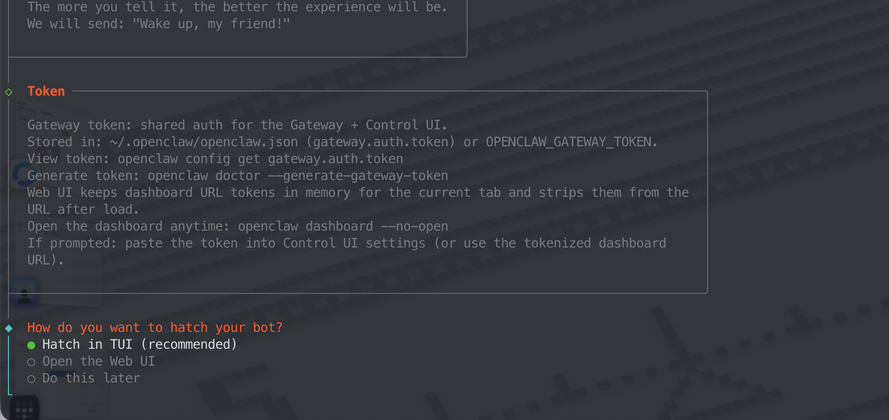
到这里就说明安装成功啦！！
下一步打开TUI或者Web UI都是可以的。或者直接Do this later。
因为之后都可以通过openclaw dashboard来打开（个人觉得，还是网页版的交互对于普通用户来说友好一些）。
如果网络环境正常，你发一句Hi（或者标准用法：“Wake up, my friend!”），会得到OpenClaw的这个回应：
Hey. I just came online.
Who am I, and who are you?
We’ve got a blank slate, so let’s make it real:
- what should I be called?
- what kind of thing am I — assistant, familiar, gremlin, ship AI, ghost in the shell?
- what vibe do you want from me — calm, sharp, warm, snarky, chaotic?
- pick me an emoji too
If you want, I can suggest a few names first.
这就说明OpenClaw完全可以使用了，然后你就可以自定义你的OpenClaw，给它赋予你想要的性格描述。
但是，回到我一开始说的，如果是网络环境不好，即使OpenClaw安装成功了，也是使用不了的，现象就是： 你发消息，OpenClaw并不回应你。
此时就需要解决网络问题。当然如果使用的大模型都是国内厂商提供的，应该就不会存在网络连接异常。
对于网络问题，一般需要代理来解决，比如使用下面的方式：
# 1. 设置系统级别的后台环境变量
launchctl setenv HTTP_PROXY "http://127.0.0.1:10809"
launchctl setenv HTTPS_PROXY "http://127.0.0.1:10809"
launchctl setenv ALL_PROXY "http://127.0.0.1:10809"
# 2. 重启 OpenClaw Gateway 让它读取新变量
openclaw gateway restart
但是！这个launchctl的设置是临时，因此需要写进文件里才是保险的：
open -a TextEdit ~/Library/LaunchAgents/ai.openclaw.gateway.plist
在打开的文本中，向下滚动找到 </dict> 和 </plist> 结尾的地方。在倒数第二个 </dict> 的上方，插入以下这一段代码：
<key>EnvironmentVariables</key>
<dict>
<key>HTTP_PROXY</key>
<string>http://127.0.0.1:7890</string>
<key>HTTPS_PROXY</key>
<string>http://127.0.0.1:7890</string>
<key>ALL_PROXY</key>
<string>http://127.0.0.1:7890</string>
</dict>
注意：7890是代理的端口，需要根据实际情况替换。如果文件里本来就已经有 <key>EnvironmentVariables</key> 这一项，你只需要把里面那三行 <key> 和 <string> 补充进去即可。
部署的过程，终究还是万里长征第一步，真正想要玩好OpenClaw，还是需要时间的。
就像打游戏，打得多了，自然就会打了。“聪明”也许很重要，但熟能生巧更重要。
希望读者们可以留言点名Push我一下，做一个OpenClaw的高级使用方法的分享～